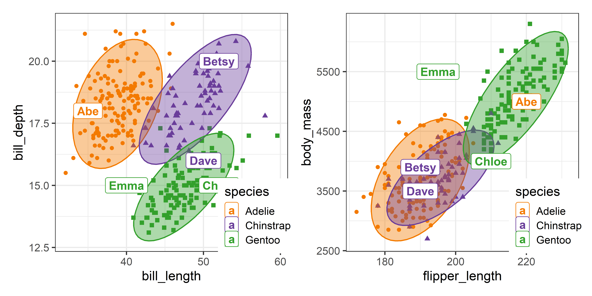
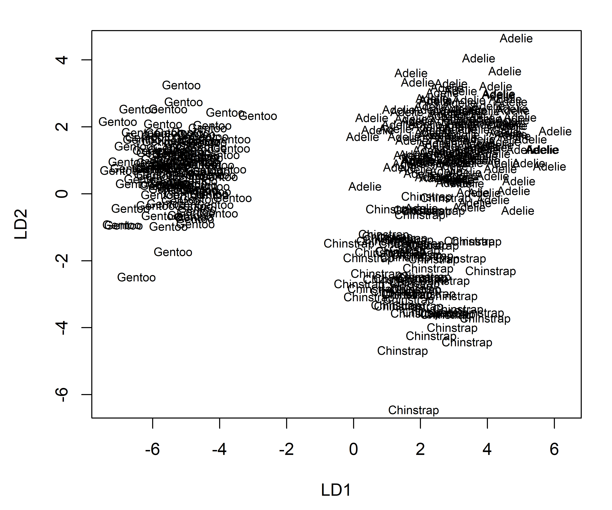
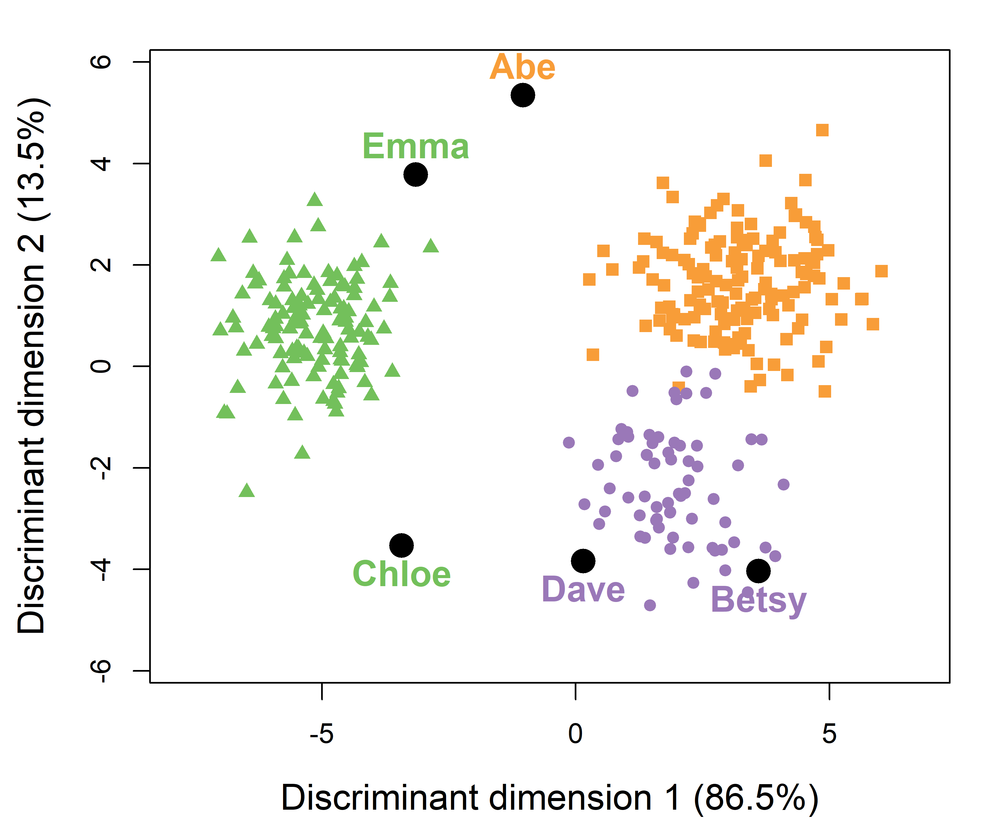
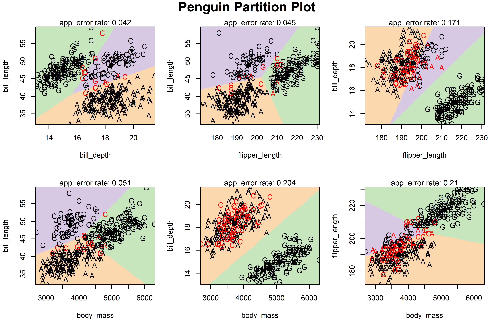
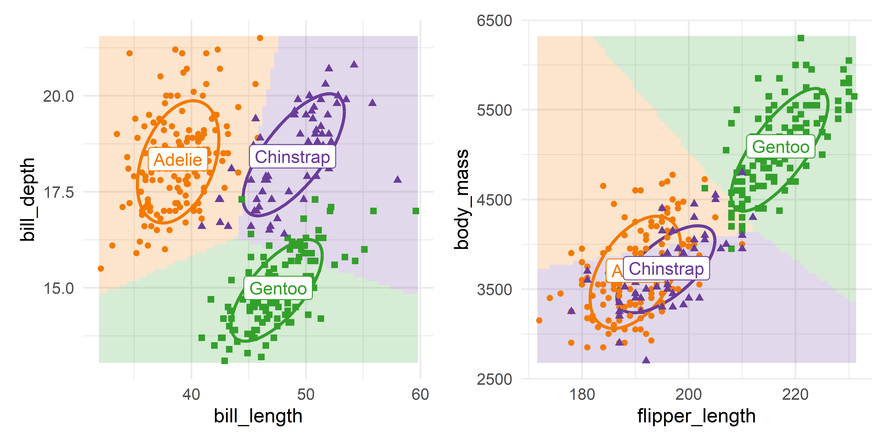
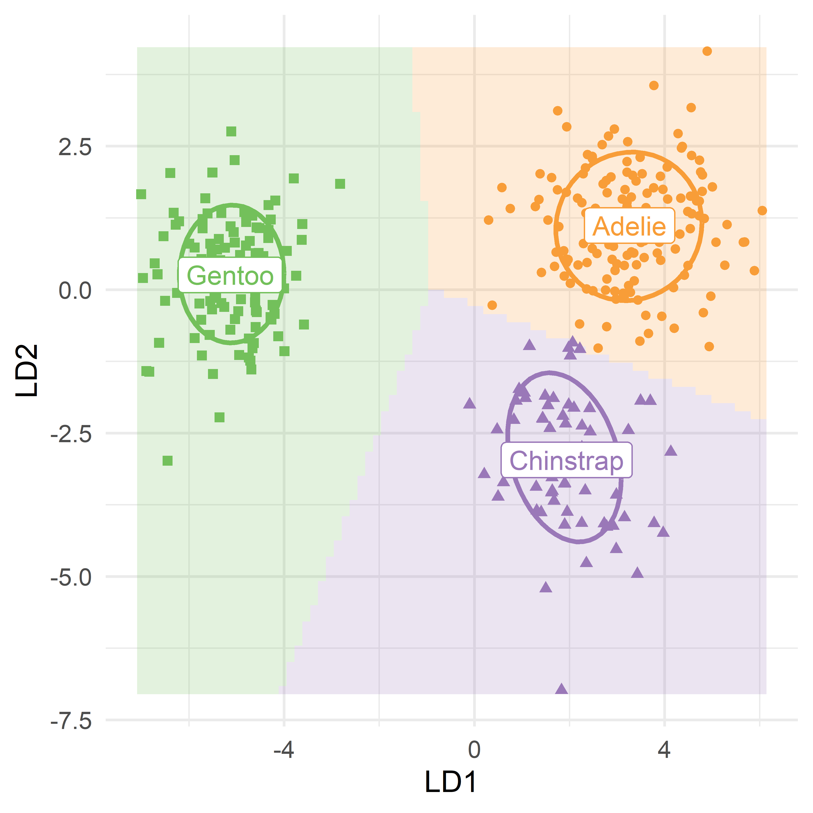
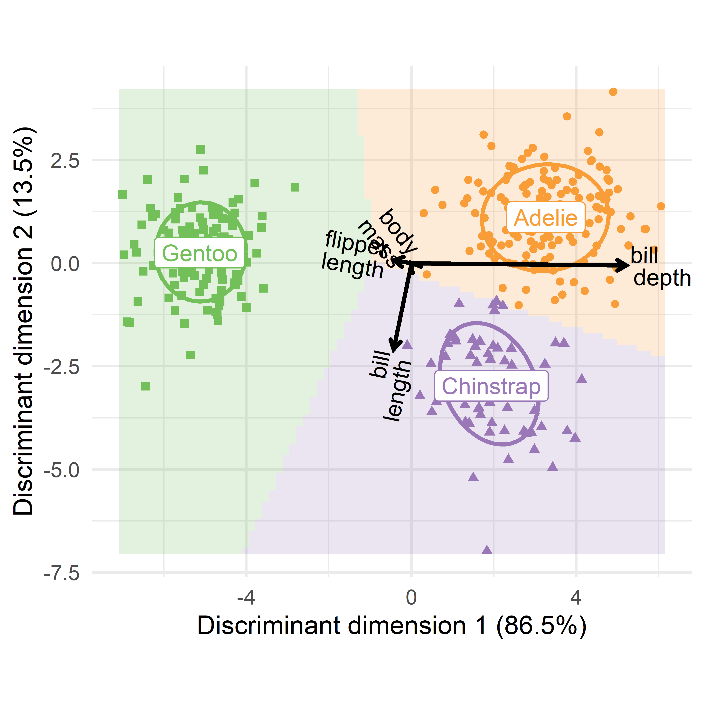
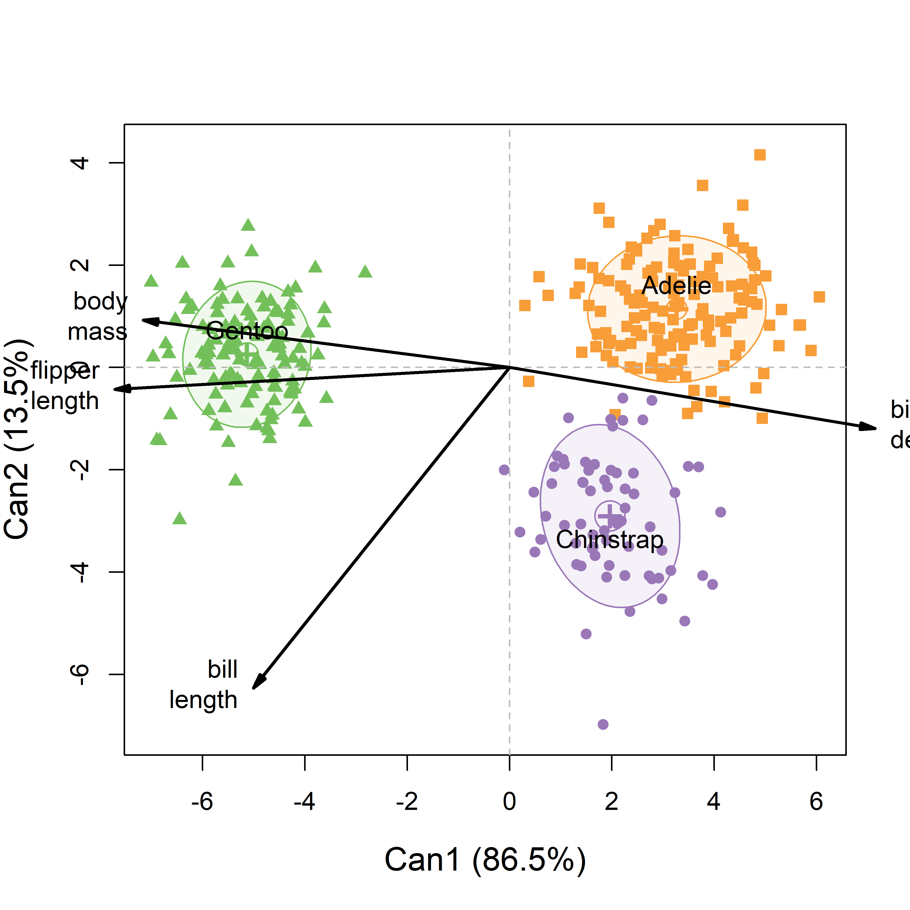

manova.mod <- lm(cbind(y1, y2, y3) ~ group)
discrim.mod <- MASS::lda(group ~ y1 + y2 + y3)Discriminant analysis
Note
This material will most likely become a chapter in the online Appendix.
As described earlier (?@sec-t2-discrim), Linear Discriminant Analysis (LDA) is similar to a one-way MANOVA, but with its emphasis on the problem of classifying observations into groups rather than testing whether there are significant differences of the means for the response variables. You would use LDA rather than MANOVA when your goal is to predict group membership and identify which variables best distinguish between pre-defined groups, rather than just testing for group differences.
Thus, LDA can be seen as a flipped MANOVA, where the role of dependent and independent variables are reversed. You can see this difference in the model formulas used in lm() compared with MASS::lda(), which fits a linear discriminant analysis (LDA) model: The outcomes on the right-hand side are cbind(y1, y2, y3) for the MANOVA but is simply group for a discriminant analysis.
One consequence of this flipped emphasis is that predicted values from predict() for an LDA is the predicted group membership for an observation with values \(y_1, y_2, y_3\) rather than the predicted response values \(\hat{y}_1, \hat{y}_2, \hat{y}_3\) in MANOVA. This is useful for classifying new observations from an LDA model, such as determining whether new Swiss banknotes are real or fake (?@exm-banknote) or classifying a new penguin.
As we have seen, the multivariate linear model fit by lm() applies equally well when there are two or more grouping factors and or quantitative predictors, whereas discriminant analysis is mostly restricted to the case of a single group factor.1
In both cases, the analysis and significance tests are based on the familiar breakdown (?@eq-SSP) of total variability, \(\mathbf{T} \equiv \mathbf{SSP}_{T}\), of the observations around the grand means into portions attributable to differences between the group means \(\mathbf{H} \equiv \mathbf{SSP}_{H}\) and the portions attributable to differences within the groups around their means, \(\mathbf{E} \equiv \mathbf{SSP}_{E}\) as described in ?@sec-sum-of-squares,
\[ \mathbf{T} = \mathbf{H} + \mathbf{E} \; . \] As we saw earlier (?@sec-H-vs-E), for \(p\) variables and \(g\) groups, having \(\text{df}_h = g-1\) degrees of freedom, significance tests are based on the \(s = \min{(p, \text{df}_h)}\) non-zero eigenvalues \(\lambda_i\) of the matrix product \(\mathbf{H}\mathbf{E}^{-1}\), reflecting a ratio of between-group to within-group variation. These are combined into a single test statistic such as Wilks’ \(\Lambda = \Pi_i^s (1+\lambda_i)^{-1}\) or Hotelling-Lawley trace, \(\Sigma_i^s \lambda_i\).
The corresponding eigenvectors, \(\mathbf{V}\) of \(\mathbf{H}\mathbf{E}^{-1}\) are the weights for the linear combinations of the quantitative variables on which the groups are most widely separated. The transformation of the \(\mathbf{Y}\) variables in data space to the space of these linear combinations is given by \(\mathbf{Z}_{n \times s} = \mathbf{Y} \; \mathbf{E}^{-1/2} \; \mathbf{V}\) as we saw earlier (sec REF?).
But here is where MANOVA and discriminant analysis diverge again. In discriminant analysis, you an replace the observed \(\mathbf{Y}\) variables with the uncorrelated \(s\) discriminant variates defined by \(\mathbf{V}\) and obtain exactly the same classifications of the observations. The first, \(\mathbf{v}_1\), associated with the largest eigenvalue \(\lambda_1\), accounts for the greatest proportion of between-group separation; the second, \(\mathbf{v}_2\) is next in discriminating power, and so forth. But maybe we can classify nearly as well with a small subset of \(k < s\) discriminants without great loss.
Hence, just as in PCA, discriminant analysis can be thought of as a dimension reduction technique, squeezing the most discriminant juice out of the data in a few dimensions. These methods differ is that in PCA, the “juice” is the total variance of the cloud of points in \(p\)-dimensional data space, whose contributions are the \(p\) eigenvalues of \(\mathbf{T}\). However, in discriminant analysis, the “juice” is ratio of between-class variation (\(\mathbf{H}\)) of the group means to the within-class (\(\mathbf{E}\)) variation in the cloud, reflected in the \(s\) non-zero eigenvalues of \(\mathbf{H} \mathbf{E}^{-1}\).
The discussion here is limited to what this altered focus adds to visualizing differences among groups on a collection of response variables. See @Klecka1980, @Lachenbruch1975 for a basic, but more general introduction to discriminant analysis methods. There is a useful discussion in this Cross Validated question How is MANOVA related to LDA?
As in MANOVA, linear discriminant analysis assumes equal variance covariance matrices across the groups. In this case, the boundaries separating predicted group memberships are hyper-planes in the data space of the quantitative variables. In 2D plots, these appear as lines, and a goal of this section is to show how you can plot these. When the variance covariance matrices differ substantially, the boundaries become curved, and the method is called quadratic discriminant analysis, implemented in MASS::qda().2
Another way that LDA differs from MANOVA is that for classification purposes, the relative proportions of the groups in your sample or in the population has a role in determining the classification rules. These are called prior probabilities, which adjust the boundaries used to classify new observations. A higher prior probability for a group increases its assigned likelihood, effectively “pulling” the classification boundary in its favor.3
Example 1 Penguins on Island Z
For an example, to illustrate how discriminant analysis works and how to use it to classify observations, imagine you are a researcher on an expedition to Antarctica to survey the penguin population. You stop at a small, as yet unnamed island “Z”, and find five penguins you want to study. You call them Abe, Betsy, Chloe, Dave and Emma. How can you determine their species based on what you know of the penguins studied before?
peng_new <- data.frame(
species = rep(NA, 5),
island = rep("Z", 5),
bill_length = c(35, 52, 52, 50, 40),
bill_depth= c(18, 20, 15, 16, 15),
flipper_length = c(220, 190, 210, 190, 195),
body_mass = c(5000, 3900, 4000, 3500, 5500),
sex = c("m", "f", "f", "m", "f"),
row.names = c("Abe", "Betsy", "Chloe", "Dave", "Emma")
) |>
print()
# species island bill_length bill_depth flipper_length
# Abe NA Z 35 18 220
# Betsy NA Z 52 20 190
# Chloe NA Z 52 15 210
# Dave NA Z 50 16 190
# Emma NA Z 40 15 195
# body_mass sex
# Abe 5000 m
# Betsy 3900 f
# Chloe 4000 f
# Dave 3500 m
# Emma 5500 fSo, you can run a discriminant analysis using the existing data and then use that to classify the new penguins on island Z. By default, MASS::lda() uses the proportions of the three species as the prior probabilities, which are given in the printed output. With \(g = 3\) groups, and \(p = 4\) variables, there are only \(s = 2\) discriminant dimensions, of which the first, LD1 accounts for 86.6% of the total …
data(peng, package = "heplots")
peng.lda <- lda(species ~ bill_length + bill_depth + flipper_length + body_mass,
data = peng)
print(peng.lda, digits = 3)
# Call:
# lda(species ~ bill_length + bill_depth + flipper_length + body_mass,
# data = peng)
#
# Prior probabilities of groups:
# Adelie Chinstrap Gentoo
# 0.438 0.204 0.357
#
# Group means:
# bill_length bill_depth flipper_length body_mass
# Adelie 38.8 18.3 190 3706
# Chinstrap 48.8 18.4 196 3733
# Gentoo 47.6 15.0 217 5092
#
# Coefficients of linear discriminants:
# LD1 LD2
# bill_length -0.08593 -0.41660
# bill_depth 1.04165 -0.01042
# flipper_length -0.08455 0.01425
# body_mass -0.00135 0.00169
#
# Proportion of trace:
# LD1 LD2
# 0.866 0.135Classification accuracy
How well did LDA succeed in classifying the penguins in the existing peng dataset? You can answer this by making a table of the frequencies of the species in the data against their predicted class, obtained from the MASS::predict.lda() method for an "lda" object:
class_table <- table(peng$species,
predict(peng.lda)$class,
dnn = c("actual", "predicted")) |>
print()
# predicted
# actual Adelie Chinstrap Gentoo
# Adelie 145 1 0
# Chinstrap 3 65 0
# Gentoo 0 0 119
# overall rates
accuracy <- sum(diag(class_table))/sum(class_table) * 100
error <- 100 - accuracy
c(accuracy, error)
# [1] 98.8 1.2That’s pretty good! Only 4 penguins are misclassified, giving an error rate of 1.2%. You can identify the errors by joining the data with the predicted class and filtering those that don’t match.
data.frame(id = row.names(peng),
peng[, c(1, 3:6)],
predicted = predict(peng.lda)$class) |>
filter(species != predicted) |>
relocate(predicted, .after = species)
# id species predicted bill_length bill_depth flipper_length
# 1 68 Adelie Chinstrap 45.8 18.9 197
# 2 286 Chinstrap Adelie 42.4 17.3 181
# 3 296 Chinstrap Adelie 40.9 16.6 187
# 4 320 Chinstrap Adelie 42.5 17.3 187
# body_mass
# 1 4150
# 2 3600
# 3 3200
# 4 3350The only confusions are between Adelie and Chinstraps. We’ll see why this is the case in plots developed below.
Classifying new penguins
The fitted model, peng.lda, can also be used to classify our new penguins by supplying using the predict.lda() with newdata = peng_new. The printed result isn’t pretty, because the function simply returns a list, with elements:
class: The predicted class for each observationposterior: The posterior probabilities for the observations being assigned to eachclass. The predicted class is that of the maximum probability.x: The scores of the test cases on the discriminant variables.
peng_pred <- predict(peng.lda, newdata = peng_new) |>
print(digits = 4)
# $class
# [1] Adelie Chinstrap Gentoo Chinstrap Gentoo
# Levels: Adelie Chinstrap Gentoo
#
# $posterior
# Adelie Chinstrap Gentoo
# Abe 9.693e-01 6.150e-10 3.069e-02
# Betsy 2.205e-05 1.000e+00 3.244e-20
# Chloe 2.263e-11 1.277e-03 9.987e-01
# Dave 5.484e-07 1.000e+00 2.766e-09
# Emma 1.518e-07 8.504e-13 1.000e+00
#
# $x
# LD1 LD2
# Abe -1.0351 5.345
# Betsy 3.6062 -4.039
# Chloe -3.4278 -3.534
# Dave 0.1504 -3.839
# Emma -3.1495 3.780A little manipulation of the result from predict() makes what has happened here more apparent.
class <- peng_pred$class
posterior <- peng_pred$posterior
maxp <- apply(posterior, 1, max)
data.frame(class, round(posterior, 4), maxp)
# class Adelie Chinstrap Gentoo maxp
# Abe Adelie 0.969 0.0000 0.0307 0.969
# Betsy Chinstrap 0.000 1.0000 0.0000 1.000
# Chloe Gentoo 0.000 0.0013 0.9987 0.999
# Dave Chinstrap 0.000 1.0000 0.0000 1.000
# Emma Gentoo 0.000 0.0000 1.0000 1.000This says that Abe has the highest probability in the Adelie class, Betty and Dave are almost certainly of the Chinstrap species, while Chloe and Emma are almost certainly Gentoos.
Visualizing classification in data space
A simple way to understand what happens in discriminant analysis is to plot the original data in data space and add labeled points for the new observations. To make this easier, I created a general function predict_discrim(), which joins the measures in the test dataset with the predicted class for each new observation. In the result, species is the predicted class. [TODO: This should be moved to the candisc package.]
source(here::here("R/predict_discrim.R"))
pred <- predict_discrim(peng.lda,
newdata = peng_new[, 3:6],
posterior = FALSE) |>
print()
# species bill_length bill_depth flipper_length body_mass
# Abe Adelie 35 18 220 5000
# Betsy Chinstrap 52 20 190 3900
# Chloe Gentoo 52 15 210 4000
# Dave Chinstrap 50 16 190 3500
# Emma Gentoo 40 15 195 5500Using this you can simply plot the original Penguin data for two variables and use geom_text() or geom_label() to identify the observations of the new penguins in this space. In Figure 1, I do this in two separate plots, one for the bill length and depth variables, and another for flipper_length vs. body_mass. The key thing is that the call to geom_label() uses the predicted species and coordinates for the new penguins from the pred dataset obtained from predict_discrim().
p1 <- ggplot(peng,
aes(x = bill_length, y = bill_depth,
color = species, shape = species, fill=species)) +
geom_point(size=2) +
stat_ellipse(geom = "polygon", level = 0.95, alpha = 0.4) +
geom_label(data = pred, label=row.names(pred),
fill="white", size = 5, fontface="bold") +
theme_penguins("dark") +
legend_inside(c(0.87, 0.15))
p2 <- ggplot(peng,
aes(x = flipper_length, y = body_mass,
color = species, shape = species, fill=species)) +
geom_point(size=2) +
stat_ellipse(geom = "polygon", level = 0.95, alpha = 0.4) +
geom_label(data = pred, label=row.names(pred),
fill="white", size = 5, fontface="bold") +
theme_penguins("dark") +
legend_inside(c(0.87, 0.15))
p1 + p2

In Figure 1, Betsy is well within the data ellipses for her species in both plots. Abe looks very much like an Adelie in the panel for the bill variables, but more like a Gentoo in terms of flipper length and body mass. Chloe, classed as a Gentoo is at the margin of the 95% ellipses. Dave, classified as a Chinstrap, looks more like a Gentoo in terms of bill length and depth, but is in the region occupied by Adelie and Chinstraps in the right panel. Emma is outside the data ellipses for all three species in both plots.
These plots are just two of the \((4 \times 3) / 2 = 6\) possible pairwise plots that would appear in a scatterplot matrix.
Visualizing classification in discriminant space
One main virtue of discriminant analysis is that it allows us to see the data in the reduced-rank space that shows the greatest differences among the groups. The 4D data space of the observed \(\mathbf{y}\) variables is replaced by 2D discriminant space of the \(\mathbf{z}\)s, which contains the same information for classification.
If you add points for the newly classified observations, you can see better why they are classified as they were in a single plot. The MASS package has a plot.lda() method, but the usual result is far too ugly to be useful. Here’s what you get with the default settings:
plot(peng.lda)

But, you can turn this sow’s ear into a silk purse (with a little graph-craft)! My goal here is to illustrate plotting in discriminant space and show how the basic plot from plot.lda() can be made more informative. First, predict_discrim() can also return the discriminant scores (LD1, LD2) for the new observations via the argument scores = TRUE. I’ll use this dataset to add labels to the plot.
pred <- predict_discrim(peng.lda,
newdata = peng_new[, 3:6],
scores = TRUE)
print(pred[, -(1:4)])
# body_mass LD1 LD2 maxp
# Abe 5000 -1.04 5.35 0.969
# Betsy 3900 3.61 -4.04 1.000
# Chloe 4000 -3.43 -3.53 0.999
# Dave 3500 0.15 -3.84 1.000
# Emma 5500 -3.15 3.78 1.000Then, I want to use more informative axis labels, showing the percent of between-group variance associated with each dimension. These come from the (poorly named) svd component of the peng.lda object.
svd <- peng.lda$svd
var <- 100 * round(svd^2/sum(svd^2), 3)
labs <- glue::glue("Discriminant dimension {1:2} ({var}%)") |>
print()
# Discriminant dimension 1 (86.5%)
# Discriminant dimension 2 (13.5%)Fortunately, plot.lda() allows a panel = argument, to control how the observations are are represented. You can override the default by creating a panel function that simply plots the points rather than their observation classes,
panel.pts <- function(x, y, ...) points(x, y, ...)Finally, call plot.lda() with this panel function, set the color and shape of the point symbols to match our Penguin theme and use the axis labels set above in labs. You can then add points and labels for the newly classified penguins.
panel.pts <- function(x, y, ...) points(x, y, ...)
col <- peng.colors()
plot(peng.lda,
panel = panel.pts,
col = col[peng$species],
pch = (15:17)[peng$species],
xlab = labs[1],
ylab = labs[2],
ylim = c(-6, 6),
cex.lab = 1.3
)
# plot the new observations and label them with their row.names in the predicted data
with(pred,{
points(LD1, LD2, pch = 16, col = "black", cex = 2)
text(LD1, LD2, label=row.names(pred),
col = col[species], cex = 1.3, font = 2,
pos = c(3, 1, 1, 1, 3),
xpd = TRUE)
})

Compared with the separate 2D views in data space (Figure 1), this single view accounts for 100% of the variance due to separation of the species groups. You can see that Betsy and Dave are rather close to the other Chinstraps. Abe, Chloe and Emma are rather far from the centers of the species they are classified as, yet they are closer to their groups than to any of the two others.
Going further
While Figure 3 is a substantial improvement over Figure 2, it is harder to go much further, because plot.lda() method conceals what it does to make the plot using the "lda" object. You have to dive into that object to get the information needed to add additional graphical information.
For example, if you also wanted to show data ellipses or other bivariate summaries in this plot, it would be necessary to get the predicted classes for each observation in peng dataset, together with the discriminant scores, LD1 and LD2, obtained using scores=TRUE in the call to predict_discrim(). Data ellipses could then be added added using car::dataEllipse() as follows (not shown)
pred_all <- predict_discrim(peng.lda, scores=TRUE)
# add data ellipses
dataEllipse(LD2 ~ LD1 | species, data = pred_all,
levels = 0.68, fill=TRUE, fill.alpha = 0.1,
group.labels = NULL,
add = TRUE, plot.points = FALSE,
col = col)Visualizing prediction regions
An even better way to understand and interpret discriminant analysis results is to visualize the boundaries that separate the prediction into one group rather than another. Our penguins live in a 4-dimensional data space, and the boundaries of the predicted classification regions are of one less dimension—3D hyperplanes here.
Any point in this data space can be classified into one of the group using a predict() method. Therefore, to visualize the prediction regions, you can calculate the prediction over a grid of values of the \(y\) variables, and then plot those using colored tiles. The steps are:
Construct a \(k \times k\) grid of values of the two focal variables \(y_1, y_2\) to be plotted:
- For each focal \(y\) variable, divide it’s range into \(k\) intervals, as in
seq(min(y)), max(y), k) - Set each non-focal variable to its’s mean.
- Use a
predict()method to get the predicted classification group for each point.
- For each focal \(y\) variable, divide it’s range into \(k\) intervals, as in
For base R graphs, you can use
image(x, y, z, ...)to plot this grid of the(x, y), wherezis a \(k \times k\)-length vector of the predicted class of an observation at this point. Inggplot2this is easier, using `geom_tile().Boundaries of the regions are the contours of the maximum of the posterior probabilities. You can plot these using
contour(x, y, z, ...)in base R orgeom_contour()inggplot2.On top of this, you can plot the data observations, data ellipses for the groups or anything else.
This idea is essentially the same as used in effect plots (?@sec-effect-displays)—you calculate predicted values over a range of the variables shown, while controlling those not shown at a typical value.
Partition plots with partimat()
The function klar::partimat() produces such “partition” plots for lda(), qda() as well as a number of other classification methods, including recursive partioning trees (rpart::rpart()), naive Bayes (e1071::naiveBayes()) and other methods. The graphs produced are generally UGLY; but they are easy to produce and convey a sense of the method. Once we have the idea in mind, we can try to make prettier, more useful versions.
partimat() takes a model formula for the classification, here species ~ . for the penguin data. It produces a classification plot for every combination of two \(y\) variables in the data, and can show them either in a scatterplot matrix format (plot.matrix = TRUE), or a rectangular display of only the unique pairs. The latter takes less space, and so allows higher resolution in the individual plots. The method argument in the call uses lda() to determine the result shown in Figure 4.
peng |>
dplyr::select(species, bill_length:body_mass) |>
partimat(species ~ ., data = _,
method = "lda",
plot.matrix = FALSE,
image.colors = scales::alpha(col, alpha = 0.4),
main = "Penguin Partition Plot"
)

In each pairwise plot of the penguin variables shown in Figure 4, the background is colored according to the species that any observation there (holding others constant) would be classified as. This fails in software design because there is little flexibility in what else is shown to represent the observations. The penguin data values are shown using the first letter of their species, colored black if that bird is classified correctly, red otherwise.4
Using ggplot()
To construct similar (but better) plots using ggplot2, I follow the steps outlined above to get predicted classes over a grid, in this case for the penguin bill variables. The function marginaleffects::datagrid() makes this easy, automatically marginalizing the other variables. You can supply a function, here range80(), to specify a sequence of a variable over its range.
# make a grid of values for prediction
range80 = \(x) seq(min(x), max(x), length.out = 80)
grid <- datagrid(bill_length = range80,
bill_depth = range80, newdata = peng)
# get predicted species for the grid points
pred_grid <- predict_discrim(peng.lda, newdata = grid)
head(pred_grid)
# species rowid island flipper_length body_mass sex year
# 1 Gentoo 1 Biscoe 201 4207 m 2008
# 2 Gentoo 2 Biscoe 201 4207 m 2008
# 3 Gentoo 3 Biscoe 201 4207 m 2008
# 4 Gentoo 4 Biscoe 201 4207 m 2008
# 5 Gentoo 5 Biscoe 201 4207 m 2008
# 6 Gentoo 6 Biscoe 201 4207 m 2008
# bill_length bill_depth maxp
# 1 32.1 13.1 1
# 2 32.1 13.2 1
# 3 32.1 13.3 1
# 4 32.1 13.4 1
# 5 32.1 13.5 1
# 6 32.1 13.6 1Then, in the plotting steps, geom_tile() is used to display the predictions in the pred_grid dataset, using the penguin colors for the species. Points and other layers use the full peng dataset. I also calculate the means for each species and use these as direct labels for the groups, to avoid a legend.
means <- peng |>
group_by(species) |>
summarise(across(c(bill_length, bill_depth), \(x) mean(x, na.rm = TRUE) ))
p1 <- ggplot(data = peng, aes(x = bill_length, y = bill_depth)) +
# Plot decision regions
geom_tile(data = pred_grid, aes(fill = species), alpha = 0.2) +
stat_ellipse(aes(color=species), level = 0.68, linewidth = 1.2) +
# Plot original data points
geom_point(aes(color = species, shape=species),
size =2) +
geom_label(data=means, aes(label = species, color = species),
size =5) +
theme_penguins("dark") +
theme_minimal(base_size = 16) +
theme(legend.position = "none")Doing the same steps for flipper_length and body_mass, and then showing the two plots together (as in Figure 1) gives Figure 5.

The groups are nicely separated in the left panel for the bill variables. For the other two variables in the right panel, Adelie and Chinstrap overlap considerably, but are well distinguished from the Gentoos. The predictions for these groups favor Adelie for penguins of greater body mass. These plots are essentially the same as those in the (1, 1) and (2, 3) panels in Figure 4, but with axes reversed.
Prediction regions in discriminant space
The 2D plot of the data in discriminant space (Figure 3) is much simpler to understand because it captures all the information regarding penguin classification in a single plot, rather than the six shown in Figure 4. Can we make a similar plot, showing the prediction regions in discriminant space?
If you recall that dimension reduction interpretation of discriminant analysis allows you to replace the observed \(\mathbf{y}\)s with their discriminant scores \(\mathbf{z}\) with the same accuracy when there are only \(s=2\) possible dimensions, you can do this first finding the discriminant scores, LD1 and LD2 and using those as predictors in a new call to lda():
peng_scored <- predict_discrim(peng.lda, scores=TRUE, posterior = FALSE)
peng.lda2 <- lda(species ~ LD1 + LD2, data=peng_scored)
peng.lda2
# Call:
# lda(species ~ LD1 + LD2, data = peng_scored)
#
# Prior probabilities of groups:
# Adelie Chinstrap Gentoo
# 0.444 0.198 0.357
#
# Group means:
# LD1 LD2
# Adelie 3.26 1.117
# Chinstrap 1.94 -2.970
# Gentoo -5.13 0.257
#
# Coefficients of linear discriminants:
# LD1 LD2
# LD1 -1.00129 -0.00155
# LD2 -0.00739 1.00569
#
# Proportion of trace:
# LD1 LD2
# 0.864 0.136As you can see from the results, the proportions of between-class variance accounted for are nearly the same as in the original peng.lda. Note that the coefficients for the old vs. new discriminants are nearly the identity matrix, except that the sign of the coefficients for LD have been flipped. [TODO: Can I fix this, ie., flip LD1 in the plot?]
Then you can follow the earlier examples in data space: Set up a grid of values for LD1 and LD2 over the discriminant space of peng_scored and obtain the predicted classifications for each point.
grid <- datagrid(LD1 = range80,
LD2 = range80,
newdata = peng_scored)
pred_grid <- predict_discrim(peng.lda2, newdata = grid, posterior = FALSE) Finally, the plotting steps are identical to that used in Figure 5. The resulting plot in Figure 6 gives a single, complete picture of the results of discriminant analysis for this dataset.
Code
means <- peng_scored |>
group_by(species) |>
summarise(across(LD1:LD2, \(x) mean(x, na.rm = TRUE) ))
means
# # A tibble: 3 × 3
# species LD1 LD2
# <fct> <dbl> <dbl>
# 1 Adelie 3.26 1.12
# 2 Chinstrap 1.94 -2.97
# 3 Gentoo -5.13 0.257
ggplot(data = peng_scored, aes(x = LD1, y = LD2)) +
# Plot decision regions
geom_tile(data = pred_grid, aes(fill = species), alpha = 0.2) +
stat_ellipse(aes(color=species), level = 0.68, linewidth = 1.2) +
# Plot original data points
geom_point(aes(color = species, shape=species),
size =2) +
geom_label(data=means, aes(label = species, color = species),
size =5) +
labs(x = labs[1], y = labs[2]) +
theme_penguins() +
theme_minimal(base_size = 16) +
theme(legend.position = "none")
p <- last_plot() # save for later

Adding variable vectors: LDA biplot
Figure 6 is like a PCA plot of observation scores on the first two dimensions, but with the addition of the prediction regions for LDA. As we saw earlier (?@sec-biplot), interpretation of such dimension reduction plots is considerably enhanced by drawing vectors, whose orientation (angles) with respect to the axes reflect the relations of the observed variables \(\mathbf{y}_1, \mathbf{y}_2, \dots\) to what is shown in the plot. The relative lengths of these vectors reflect their contributions.
In the result of lda() the weights for the observed variable are given in the scaling component, which is a matrix. For use with ggplot(), this must be converted to a data.frame, and the row names of the observed variables must be made into an explicit variable. To take less space in the plot, the underline (_) is replaced by a newline (\n).
vecs <- peng.lda$scaling |>
as.data.frame() |>
tibble::rownames_to_column(var = "label") |>
mutate(label = stringr::str_replace(label, "_", "\n")) |>
print()
# label LD1 LD2
# 1 bill\nlength -0.08593 -0.41660
# 2 bill\ndepth 1.04165 -0.01042
# 3 flipper\nlength -0.08455 0.01425
# 4 body\nmass -0.00135 0.00169Then, I use gggda::geom_vector() to draw the variable vectors. Only the relative lengths of these matter, so you are free to multiply them by any constant to make them fill the plotting space. Because the interpretation of angles is important, it is necessary to assure that the aspect ratio of the plot is 1, so that one unit on the x-axis is the same length as one unit on the y-axis, which is done using coord_equal().
p + gggda::geom_vector(
data = vecs,
aes(x = 5*LD1, y = 5*LD2, label = label),
lineheight = 0.8, linewidth = 1.25, size = 5
) +
coord_equal()

Relation to MANOVA and CDA
As I noted at the outset, LDA is in some sense a twin of MANOVA, but with it’s emphasis flipped from significance tests to classification. This connection can be made more apparent by using the canonical representation of the MANOVA (?@sec-candisc) implemented in the candisc package. You simply send the "mlm" object computed with lm() to candisc() and get significance tests for the model in terms of the dimensions that discriminate best among the species.
peng.mlm <- lm(cbind(bill_length, bill_depth, flipper_length, body_mass) ~ species ,
data = peng)
peng.can <- candisc(peng.mlm, data=peng) |>
print()
#
# Canonical Discriminant Analysis for species:
#
# CanRsq Eigenvalue Difference Percent Cumulative
# 1 0.938 15.03 12.7 86.5 86.5
# 2 0.700 2.34 12.7 13.5 100.0
#
# Test of H0: The canonical correlations in the
# current row and all that follow are zero
#
# LR test stat approx F numDF denDF Pr(> F)
# 1 0.0187 516 8 654 <2e-16 ***
# 2 0.2997 255 3 328 <2e-16 ***
# ---
# Signif. codes: 0 '***' 0.001 '**' 0.01 '*' 0.05 '.' 0.1 ' ' 1In the table printed, the eigenvalues are the \(\lambda_i\) of \(\mathbf{H}\mathbf{E}^{-1}\) and their percent contributions are the same as what we saw from the discriminant analysis given by lda().
Canonical discriminant plot
The plot() method for a "candisc" object give something similar to what we saw in Figure 7. In the code, ellipse = TRUE adds 68% data ellipses for the disciminant scores for each species, and rev.axes is used to reflect the directon of the horizontal axis to make it similar to Figure 7. The result is shown in Figure 8.
Code
plot(peng.can,
col = peng.colors(),
pch = 15:17,
ellipse = TRUE,
rev.axes = c(TRUE, FALSE),
var.labels = vecs$label,
var.col = "black", var.lwd = 2,
scale = 7.3,
cex.lab = 1.3)

peng.mlm. Data ellipses summarize the within-group variation of the canonical scores. Variable vectors to show the correlations of the observed variables with the discriminant dimensions.
What is most apparent in Figure 8 is that the horizontal axis is reversed relative to Figure 7, with the Gentoo penguins on the left rather than the right. But that’s OK because the signs of the eigenvectors are arbitrary.
A more important difference is that the relative lengths and angles of the variable vectors differ in the two plots. This is because the variable coefficients in peng.lda$scaling calculated by lda() are unstandardized by default, whereas the plot from candisc() uses standardized, structure coefficients (correlations). These can be compared directly among variables to assess their relative importance. In the penguin data, body_mass is measured in grams, while the other variables are in millimeters. You would get more similar results from lda() if the variables were standardized first.
Canonical HE plot
Finally, if the focus is on MANOVA, to determine whether and how the penguin species differ on these variables, you can summarize that with the canonical version of an HE plot, as shown in Figure 9, which effectively substitutes the canonical \(\mathbf{H}\) and \(\mathbf{E}\) ellipses for the canonical scores displayed in Figure 8.
This is shown using effect scaling (?@sec-signif-scaling) because the differences among the groups (\(\mathbf{H}\)) are so large relative to within group variation (\(\mathbf{E}\)). The \(\mathbf{E}\) ellipse plots as a circle because the canonical scores are uncorrelated with variances of 1.
Code
heplot(peng.can,
size="effect",
fill=c(TRUE, FALSE), fill.alpha = 0.1,
rev.axes = c(TRUE, FALSE),
var.labels = vecs$label,
var.col = "black", var.lwd = 2,
xlim = c(-8, 8), ylim = c(-8, 4),
scale = 8.2,
cex.lab = 1.3, cex = 1.3)
peng.mlm.
Footnotes
The function
candisc::candisc()carries out a generalized discriminant analysis, for one term in a multivariate linear model.candisc::candiscList()does this for all terms in a model.↩︎There are a number of other methods of discriminant analysis. For example, in mixture discriminant analysis (MDA), each class is assumed to be a mixture of several Gaussian distributions, rather than a single one. flexible discriminant analysis (FDA) is an extension of LDA that uses non-linear combinations of predictors such as splines. FDA is useful to model multivariate non-normality or non-linear relationships among variables within each group, allowing for a more accurate classification. These are implemented in the package
mdaasmda()andfda(), which have the same syntax and similar methods tolda().↩︎You can choose prior probabilities for discriminant analysis by (a) using equal probabilities for the groups, (b) calculating them based on the observed sample sizes in your dataset, or (c) manually specifying known prior probabilities if you have external information about the population. The choice depends on whether you want the model to be influenced by group sizes or if you have pre-existing knowledge about the likelihood of group membership. The choice is also influenced by the cost of misclassification. …↩︎
In fairness,
klaR::partimat()was designed to emphasize the classification accuracy shown in each pairwise plot, also printed as an error rate for each plot. You can see, for example that the plot ofbody_massagainstbill_depthin row 2, column 2 of Figure 4 shows only two distinct regions, for Adelie and Gentoo. All the Chinstraps appear mixed in with the Adelies and, giving an error rate of 0.204 in this plot. Two other panels also show high error rates.↩︎